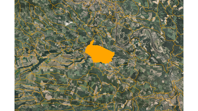
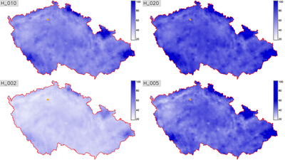
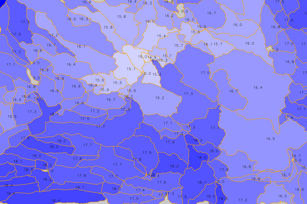

DESCRIPTION
r.subdayprecip.design computes subday design precipitation
totals based on Hradek's method of reduction of daily maximums to
chosen duration.
The tool uses methods of zonal statistics to compute average values of
24 hours precipitation amounts of specified return period for a
provided area or a spot. Rasters of daily maxima were derived from
statistics published by Samaj et al. in 1985, which were based on
precipitation series observed in 1901-1980. Calculated average value (in millimeters)
is then reduced to the chosen length of design rain event.
NOTES
Subday design precipitation series are important for hydrological
modelling and soil erosion problems in a small catchment scale when
designing common measures for promoting water retention, landscape
drainage systems, flood mitigation measures etc.
First automatization has been implemented by well-known method
which is based on reduction of 24 hours design precipitation to
shorter time. GIS can used for spatial supervised classification of
point values of specified return periods (2, 10, 20, 50 and 100
years).
|  |
 |
Figure: Basins (in orange) with orthophoto
on background |
Figure: Return periods (2, 10, 20, 50 years)
in the area of the Czech Republic |

Figure: IV.order basins colored by mean H_N2T60 value (in millimeters)
EXAMPLE
r.subdayprecip.design map=basin return_period=N2,N5,N10,N20 rainlength=60
REFERENCES
- Landa M., Kavka P., Strouhal
L. (2015). A
GIS tool for reduction day precipitation to subday
(poster)
- Tomasu
M. (2013). Tvorba
nastoje pro sestaveni kratkodobych navrhovych destu na zaklade
rizene interpolace a redukce (in Czech)
- Torfs, P. J. J. F., Horacek, S., & Rakovec,
O. (2010). Chimera, a framework for conceptual modelling using
analytical sensitives to parameters: implementation and
application to PDM model.
- Sokol, Z., & Bliznak, V. (2009). Areal distribution and
precipitation-altitude relationship of heavy short-term
precipitation in the Czech Republic in the warm part of the
year. Atmospheric Research, 94(4), 652-662.
Acknowledgement
This work has been supported by
the research project QJ1520265 -
"Variability of Short-term Precipitation and Runoff in Small
Czech Drainage Basins and its Influence on Water Resources
Management".
SEE ALSO
v.rast.stats,
v.what.rast
AUTHOR
Martin Landa, GeoForAll (OSGeoREL) Lab, Czech Technical University in Prague, Czech
Republic
The module is inspired by Python script developed for Esri ArcGIS
platform by M. Tomasu in 2013.